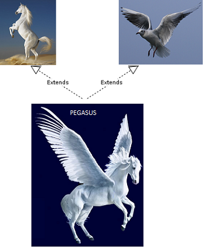

Java为何不支持多继承 Why Multiple Inheritance is Not Supported in Java
原文：http://javapapers.com/core-java/why-multiple-inheritance-is-not-supported-in-java/
James Gosling 在95年二月发表的名为“Java: an Overview”的白皮书中给出了为什么Java不支持多继承的思量。
Java略去了好多C++中很少用到的，很难理解的，令人困惑的特性，根据我们的经验这些特性带来的麻烦比它们带来的好处更多。这些去掉的特征主要包括操作符重载(但是Java有方法重载)，多继承，广泛的自动强制类型转换。
Java不支持多继承
首先给出论。Java到底支不支持多继承本身就是一个争议点。有人说Java支持多继承。不，Java中没有对多继承的支持。如果你不相信我的话，把上面Java之父的那段话再读一下。
用接口支持多继承的说法是我们这些开发人员自己编造出来的。接口比实体类提供了更高的灵活性，我们可以选择用单个类去实现多个接口。这样我们通过继承两个模板来构建一个类。
这样做是在尝试向多继承靠近。其实我们做的是实现多个接口，却没有继承任何东西。实现一个类的接口的工作是向其中添加属性和方法，而不能直接从父类中获取具体实现。简单地说，Java中没有堆多继承的支持。 ##多继承 Multiple Inheritance
多继承是我们在一个类中继承多个类的属性和方法。C++，Common Lisp等是常见的流行编程语言中支持多继承的。

Java为什么不支持多继承？ Why Java does not support multiple inheritance?
现在我们确认了一点：Java不支持多继承。但是为什么？这是Java的创造者们做得决定。主要原因是两点：简洁、极少用到。
简洁
我想分享下James Gosling给Java下的定义
Java：一个简单的，面向对象的，分布式的，解释的，健壮的，安全的，架构中立的，可移植的，高性能的，多线程的，动态的语言。
看看这个优美的Java定义。这是现代软件开发语言应有的定义。这定义的第一个特性是什么？简单！
为了简洁这个目的应该是删除多继承最主要的原因。比如，我们可以考虑下下面这个多继承的菱形问题。

有两个类B和C都继承自A。假设B和C都重载了继承自A的方法，并提供了它们各自不同的实现。现在有一各类D它用多继承同时继承了B、C。D应该继承那个重载的方法，但是使用的时候到底用的是哪个？B的，还是C的？这里不明确，会导致歧义。
C++中提供了额外的方法来规避这个陷阱。在Java中这个问题根本就不会出现。Java中即使一个类实现的多个接口里面有同样的方法，它也只会有一个这样的方法而且它会有自己的实现。类的动态加载机制使得实现多继承变得非常困难。
很少使用
Java已经投入使用很长时间了，有几次我们因为Java没有多继承而碰壁的？以我给人的经验来说，一次都没有！由于很少有场景需要多继承，再考虑到多继承带来的实现上的麻烦，多继承是可以安全的移出的。这样麻烦完全不值，因此Java选择了简洁的途径。
即使确实需要多继承时，我们也可以通过其他设计方法来达到要求。因此没有多继承Java照样可以工作得很好，而且不会带来其他问题，恐怕这也是不要多继承的原因之一。
对此，我的观点是，Java去除多继承并不是她的缺点而且对实现者来说会更简单。